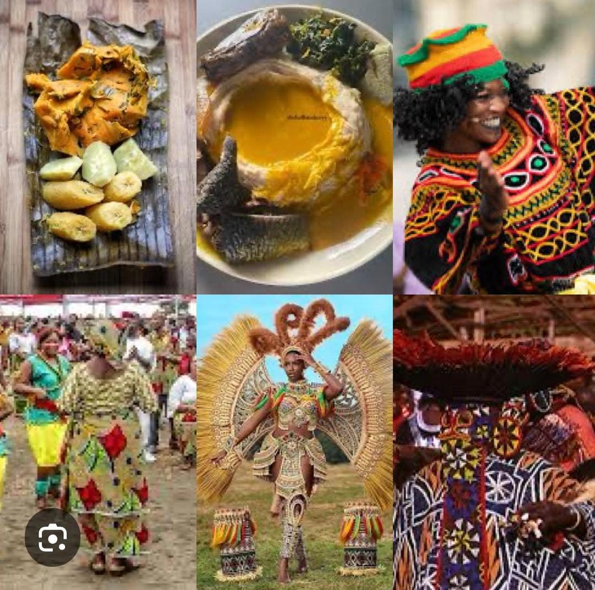

Cameroon has rich and diverse culture shaped by over 250 ethnic groups and languages.
The country is often called "Africa in miniature" because of its varities in traditions,
music, food and laguages.
Traditional dances, music with drums, xylophones, balophones and colorful clothings
like togu and kaba are part of ther everyday life.
Language spoken includes French
and English(official languages) along with many other local languages like Bafut, Mankon,
Batibo and Douala.
They have diverse dishes like achu, ndole, eru, fufu,vegetables.
Respect for elders, community spirits and traditional festivals such as the Mandele(by
the bafut people)
and the Ngondo (by the douala people). Religion is also important
with Christianity, Islam and Traditional beliefs are widely practiced.
